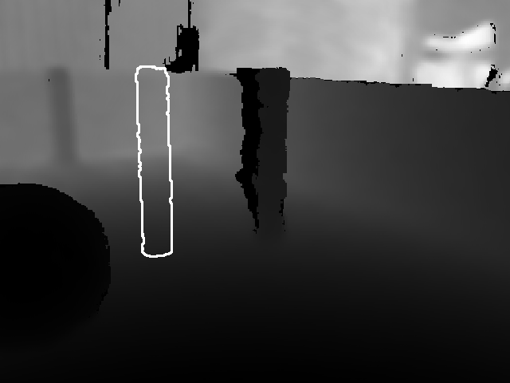
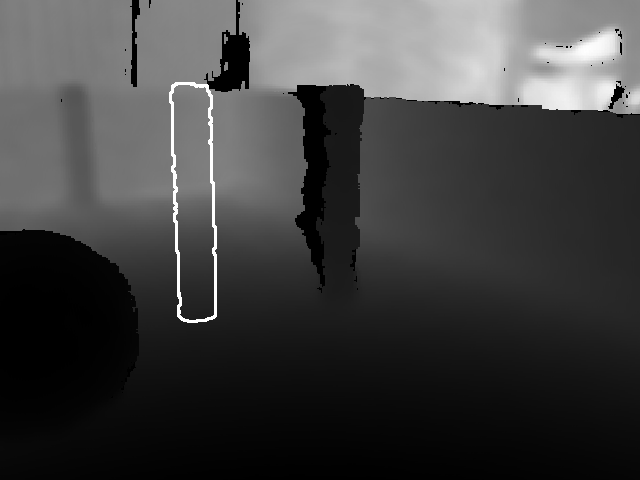

1. Project Overview
Our objective was to engineer a fully autonomous control system for a TurtleBot navigating the "Score a Goal" challenge. The system was designed to perceive the field, identify the ball and a goal marked by two blue posts, and execute a multi-step plan to score. A key challenge was navigating a field with up to three obstacles, which required the robot to calculate indirect paths to the goal. Rather than a straight shot, our algorithm enabled the robot to first kick the ball to an optimal position before striking it into the goal. Our group was one of only two (from the entire grade) to successfully implement this complex version of the challenge.
2. Object Detection from Image Data
Detection Pipeline
- Image Preprocessing: The raw RGB input was first refined to enhance signal quality. This involved cropping the frame to remove background distractions and applying sequential Gaussian and bilateral filters to reduce noise while preserving critical edge information.
- Color Segmentation: To achieve robust detection across varying lighting conditions, the image was converted to the HSV color space. We then applied pre-defined HSV thresholds to generate binary masks, isolating pixels corresponding to the yellow ball, blue goalposts, and obstacles.
- Adaptive Thresholding: In parallel, adaptive thresholding was performed on a grayscale version of the image to account for localized lighting variations. The resulting binary mask was then merged with the HSV mask to significantly improve detection reliability.
- Contour Filtering: Finally, contours were extracted from the composite binary masks. These potential object outlines were systematically filtered based on geometric properties—including area, convexity, and circularity—to accurately identify targets and eliminate false positives.
3. 3D Localization & Mapping
To navigate intelligently, the robot required a precise understanding of the 3D positions of all key objects. This was achieved through a multi-stage pipeline that transformed 2D pixel data into a robust, global 3D map.
1. 3D Position Estimation from 2D Contours
- Robust Distance Sampling: Instead of relying on a single pixel, we sampled a 5-pixel radius circular region around the object's detected center. The 3D points from the camera's point cloud data within this region were then averaged to provide a reliable distance estimate, mitigating sensor noise.
- Center Point Correction: To get the true distance to the object's center, the known radius of the object (e.g., 11 cm for the ball, 2.5 cm for goalposts) was added to the measured surface distance.
- Data Validation: A crucial failsafe was implemented to handle cases where an object, visible in the RGB image, was occluded in the point cloud. If the sampled region returned a
NaNvalue, the detection was discarded to prevent mapping errors.
2. Coordinate Transformation and Camera Calibration
A significant challenge was transforming the pixel coordinates from the 2D image plane into the robot's 3D reference frame. This required correcting for the camera's physical orientation.
- Projection Vector Calculation: A 3D direction vector for any given pixel
(u, v)was calculated using the intrinsic camera matrix K. However, this assumes the camera is perfectly parallel to the ground. - Experimental Tilt Calibration: We performed an experiment to precisely measure the camera's downward tilt. By observing other robots at an identical height, we calculated the rotational correction needed to zero out their vertical angle in our robot's view. This calibration yielded a precise downward tilt of -15.2°.
- Final 3D Point Calculation: The initial projection vector was then corrected by applying a rotation matrix T for the -15.2° tilt. This corrected vector, when scaled by the calculated distance d, gave the object's precise 3D coordinates relative to the camera.
3. Global Mapping with Odometry Integration
The final step was to translate these camera-relative 3D coordinates into a single, persistent global map. Using the robot's odometry data, we applied a standard 2D rotation-translation transformation. The object's local position vector was rotated by the robot's current global orientation and translated by its global position, correctly placing it on the map and accounting for differences between the odometry and map coordinate frames.
4. Detection of Unknown Obstacles
In addition to tracking known objects, the system was designed to dynamically identify and map unknown ("nameless") obstacles. This capability allowed it to react to environmental features not defined by color, such as arena walls, other robots, or even poorly segmented objects.
This detection was performed exclusively using the point cloud. The process involved comparing the actual depth data against a pre-calculated expected depth map—a model of the flat ground plane based on the camera's known height and tilt angle. The system scanned the point cloud at a fixed vertical height every 50 horizontal pixels. If the measured depth at any point deviated from the expected ground plane by more than 1 meter, the point was classified as an unknown obstacle and its 3D position was mapped.
To prevent redundancy and conflicts in pathfinding (e.g., treating the ball as an obstacle twice), a final filtering step was applied: any 'nameless' obstacles detected in the immediate vicinity of an already identified named object were discarded.
4. Path Planning
After successfully localizing all relevant objects, the next key step was to plan a safe and efficient trajectory. For this task, we implemented the Theta* algorithm, an advanced any-angle pathfinding algorithm that produces smoother and more direct paths than a standard A* search.
Environment Representation and Obstacle Inflation
The algorithm operates on a discrete grid representation of the playing field. The positions of all detected obstacles were first converted from world coordinates to grid cell coordinates. To prevent collisions, these obstacles were then inflated. This process marks all cells within a certain radius of an obstacle as occupied. The inflation radius was calculated based on the robot's physical radius plus an additional safety margin, ensuring that any generated path would maintain a safe distance from all known hazards.
The Theta* Algorithm in Practice
Like A*, Theta* uses a heuristic to guide its search efficiently toward the goal. However, its key advantage is the inclusion of a line-of-sight check. When expanding from a node, Theta* checks if a direct, unobstructed path exists from the *parent* of the current node to the new neighbor. If line-of-sight is clear, it forms a direct connection, allowing the path to "cut corners" rather than being constrained to grid edges. This results in a significantly smoother and more realistic trajectory for the robot to follow. If the start or end point happened to fall within an inflated zone, a Breadth-First Search (BFS) was used to find the nearest valid, non-obstructed cell to begin planning from.
Defining the Goal: The Kicking Position
Crucially, the pathfinding target was not the ball itself, but a calculated kicking position. This is an ideal point located a specific distance behind the ball, perfectly aligned with the center of the goal. The calculation involves the following steps:
- A vector is created from the goal's center to the ball's position.
- This vector is normalized to create a unit vector, which represents the direction of the kick.
- The final kicking position is determined by moving from the ball's position along this unit vector by a specified
clearancedistance.
By setting this strategic point as the goal for the Theta* algorithm, we ensured that upon arrival, the robot would be perfectly oriented to execute a straight push towards the goal. The output of the planner is a sequence of waypoints, which are then passed to the robot's control system.
5. Robot Control
To follow the generated path, we implemented two primary controllers to manage the robot's movement.
- P-Controller for Linear Velocity: A proportional controller determined the robot's forward speed. The speed was proportional to the remaining distance to the current target waypoint. We implemented minimum and maximum velocity saturation to prevent the motors from stalling at very low speeds or moving too quickly.
- PD-Controller for Angular Velocity: A proportional-derivative controller was used for fine-tuned, stable rotation. The proportional term reacted to the angular error (the difference between the robot's current heading and the direction to the target), while the derivative term smoothed the response by considering the rate of change of this error. This combination allowed for quick yet smooth turning without overshoot.
6. Implementation & Control Logic
The entire system was orchestrated by a central control loop that functions as a state machine. Its primary goal is to score a goal, and it will continue to execute until a direct kick is attempted or it is manually stopped. This reactive design ensures the robot always has a defined task. If any step in the process fails, the loop restarts from the beginning, forcing the robot to re-evaluate the environment with fresh data.
The Scan-and-Map Cycle
The process begins with a scan phase, where the robot performs a 360° rotation in 45° increments. At each step, it pauses briefly to ensure the RGB and point cloud data streams are synchronized, mitigating issues with sensor lag. After each scan, the newly detected objects are merged with the existing world map. Each new detection is compared to existing objects; if it's within a 10 cm threshold of an old one, their positions are averaged. New objects are added, and old objects without a recent detection are temporarily retained to prevent them from disappearing from the map due to transient sensor dropouts.
 

Lost State Recovery
If the robot cannot determine a valid kicking position—either because it can't see the ball, the goal, or sees too many of either due to sensor noise—it enters a recovery state. The primary strategy is to navigate towards the center of its known environment to gain a better vantage point. For safety, it only travels a short distance (max 1.5m) along this path to avoid colliding with unseen obstacles. If the robot is already at the center and still "lost," it chooses a random nearby target to explore. This process repeats until it has the necessary information to proceed.
Strategic Kicking Logic
The system's core intelligence lies in its ability to decide *how* to kick. It evaluates whether a direct shot is possible by calculating the largest unobstructed angle between the ball and the goalposts.
- Direct Kick: If the clear angle is greater than 20°, the robot classifies it as a direct shot. It then aims for the center of this opening and executes the kick. This action terminates the control loop.
- Indirect "Tapping" Strategy: If the path is blocked, the robot plans a series of smaller, controlled taps to maneuver the ball around obstacles. It first calculates an ideal, obstacle-free path for the ball. It then takes just the first segment (the tangent) of this path and sets a target 0.5m along it. After tapping the ball towards this intermediate target, the entire control loop restarts.
The physical kick itself is mechanically simple: the bumper sensors are temporarily disabled, and the robot moves forward at a set speed to strike the ball. The same navigation routine is used for both normal traversal and kicking, with only the speed and sensor states adjusted.
7. Challenges & Results
This project was a rewarding challenge. Significant time was invested in refining the object detection pipeline to make it robust against variable lighting conditions throughout the day. We also debugged a peculiar issue where the robot's motion control loops would only function correctly when interspersed with print or sleep commands, likely due to a process scheduling anomaly in the execution environment.
A major external challenge arose mid-semester when a mandatory update to the ROS container forced all robots into a low-resolution camera mode, incompatible with our existing code. We solved this by reverting to an older Singularity image and manually importing the necessary libraries, a workaround that required a full day of troubleshooting.
Despite these hurdles, the final system is capable of robust, autonomous navigation and goal-scoring in nearly any field configuration, even with more obstacles than required by the assignment. Given more time, the codebase could be further refined for clarity. A logical next step would be to enhance the robot's spatial awareness beyond its reactive, "goldfish memory" approach by implementing a true SLAM algorithm, allowing it to build and calibrate its position within a persistent map aggregated from multiple viewpoints.